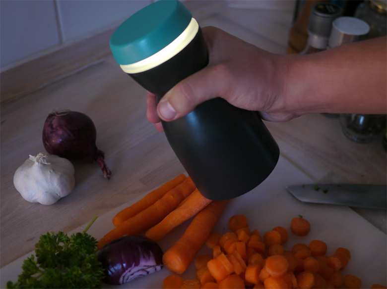

OmniOn. Making audio easy in the kitchen.
A project for the tangible user interface class at CIID. Our research about audio use in the home showed a distinct pattern, people often engage with audio in the kitchen. Cooking is one of the few activities during which people have time to enjoy music or a podcast.
Unfortunately, listening to music while cooking isn’t the most seamless experience. As any home chef knows, hands are often wet or dirty to easily control audiosystems used in the kitchen.
We addressed this challenge with the creation of a minimal-effort, kitchen-friendly device to remotely control whatever audiosystem people are comfortable using. Current audio controls in the kitchen seem contrived, uncomfortable, and especially unsuitable for handling with wet or dirty hands. We examined natural kitchen choreography and the physical environment to inspire the form and gestural interactions with our tangible “interface”.
OmniOn was prototyped mainly using an Arduino Nano and an accelerometer. It connects to any audio device using a wireless chip.
OmniOn blends perfectly into the kitchen environment. It is water resistant, easy to clean and focuses on the most used audio functions. Press the top to play or pause. When paused, the LEDs breathe. Rotate the top to adjust volume.
The brightness of the LEDs correspond to the level of volume – the louder the audio, the brighter the light. These primary functions have standard haptic feedback because of their instinctual daily associations. OmniOn has additional gesture functions that can be easily customized to a control of your choice – skip, shuffle, and timer are just some of the various options to choose from. You can even record your own gestures.

Date: 2012
Project by: Markus Schmeiduch, Ana Catharina M. Marques, Kostantinos Frantzis and Momo Miyazaki
My Work: research, design thinking - concept, prototyping with wood & acrylic, hardware design for button interactions, interface design & prototype development for Mac App, video shooting.